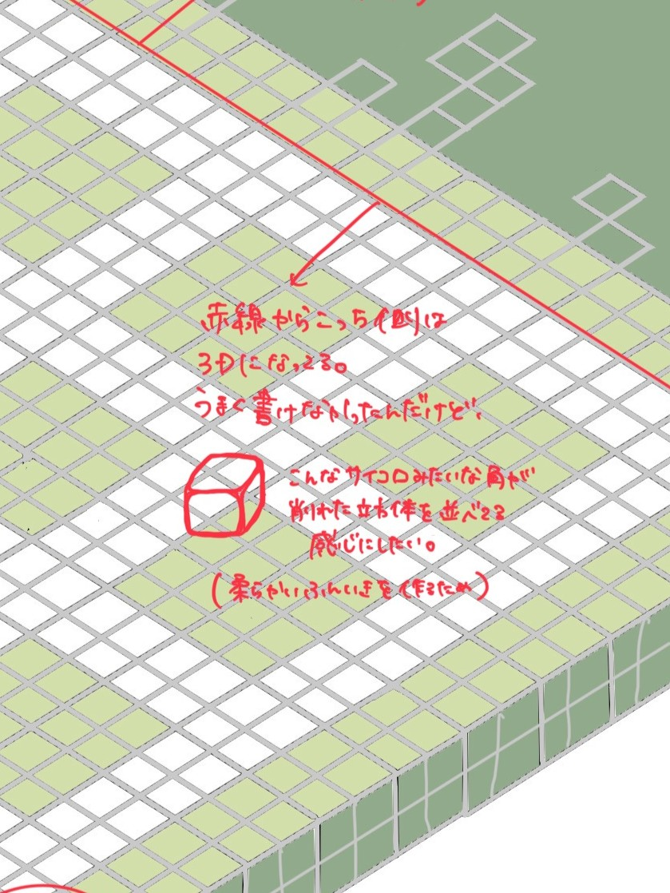
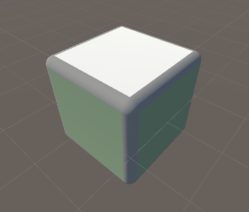
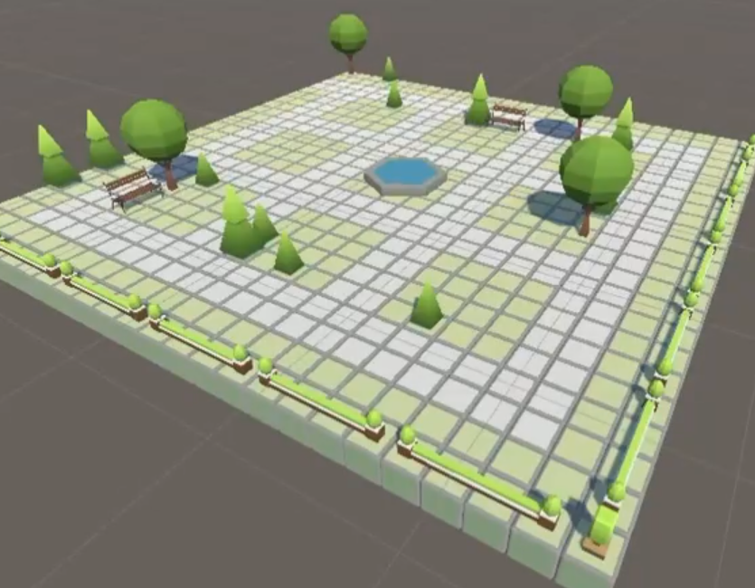
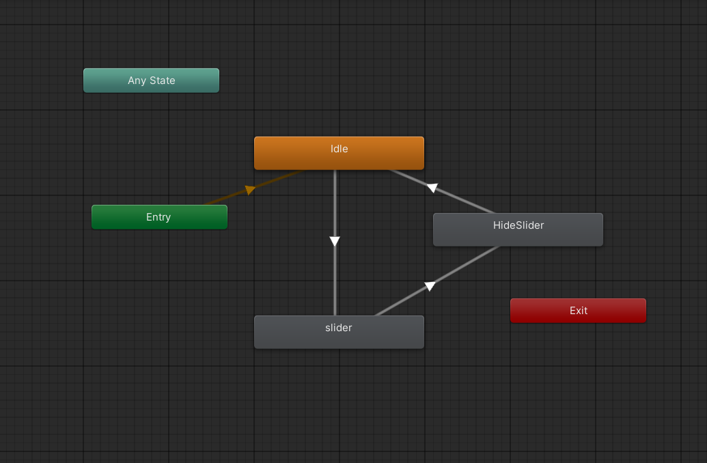
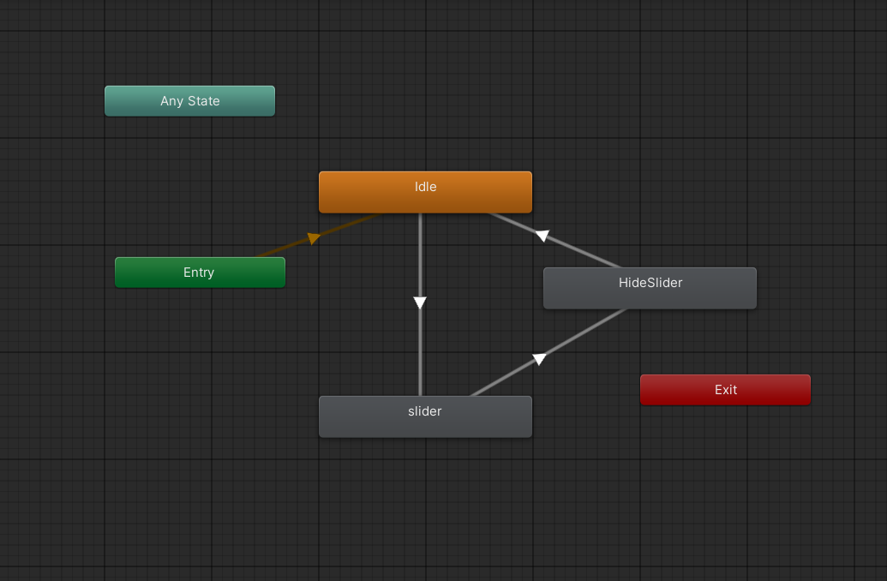

挑戦①：「ないなら創る」- Blenderでの3Dモデル制作
The Challenge (課題)
デザイナーがイメージする「サイコロみたいな角が削れた立方体」の地面モデルが、既存のアセットストアでは見つかりませんでした。
My Approach (思考と行動)
- 「アセットがないから諦める」という選択肢ではなく、「どうすれば実現できるか」を考え、「Blenderなら自作できる」という仮説に至りました。
- Blenderは未経験の状態から自ら学習し、デザイナーのイメージを再現した3Dモデルを作成しました。
The Result (結果)
デザイナーのイメージ通りの3Dモデルを自作し、再現しました。作品の世界観構築に大きく貢献し、「ないなら創る」という課題解決方法を実践することができました。

1. デザインスケッチ

2. Blenderでの制作

3. Unityへの実装
 
